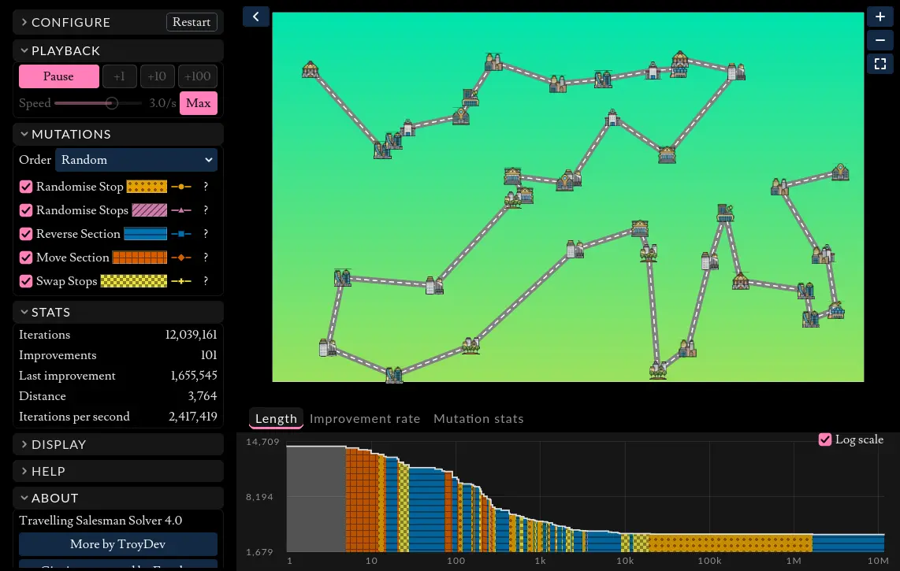
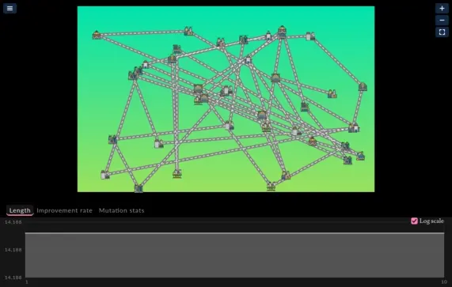

Travelling Salesman Solver
The interactive parts of this page require javascript to be enabled.
(There are no ADs or tracking scripts installed on this website!).

The solver is a download of around 13 MB, and works best with a mouse or trackpad. On a touch screen you can tap to place stops, drag them to move them or onto the bin to delete them, and zoom with the buttons, but not yet pan.
Controls
Editing the map
Every mouse action has another way to do it, for trackpads, one-button mice and touch screens.
| Place a stop | Left click |
| Move a stop | Left drag, or hold G over it |
| Delete stops | Right drag, Ctrl/Cmd + drag, hold X, or drop a dragged stop on the bin |
| Pan | Middle drag, Alt/Option + drag, two-finger drag, or WASD / arrow keys |
| Zoom | Mouse wheel, pinch, + and -, or the buttons at the map's top right |
| Fit the map to the view | F, or the button under the zoom buttons |
| Start or stop solving | Space |
| Find one more improvement | . |
The sidebar
Configure sets the number of stops and the seed. The same seed and stop count always generate the same stops, and solve them the same way, so an interesting tour can be shared or replayed. From here you can also add, shuffle or clear stops, and choose whether the salesman loops back home.
Playback starts and stops the solver (it starts playing at 3 improvements per second), or steps it forward by 1, 10 or 100 improvements. The speed limit slows solving down so you can watch the route untangle, or tick Max to solve as fast as possible.
Mutations turns each mutation on or off, and picks whether they are tried at random or in turn. The ? button explains each one.
Stats shows how the search is going, Display picks a light or dark theme and has a high contrast mode for tours with hundreds of stops, and Help lists these controls.
Under the map, the Graphs dock plots the tour's length and rate of improvement as it is solved, and tallies how often each mutation succeeds. On narrow screens the sidebar folds away, using the button at the top left of the map.
Download it
It also runs on its own, without a browser. Unzip the file for your system, keeping the two files in it together, then run "TravellingSalesman.exe" on Windows or "TravellingSalesman.x86_64" on Linux.
How it works
The algorithm
A basic hill-climber is used: the tour is copied, mutated, and the change is kept if the tour is no longer than before. Millions of attempts a second are made, and only a tiny fraction of them are improvements.
Individually the mutations often get stuck in clearly sub-optimal solutions, however together they cover each other's weaknesses and give great results very quickly.
The mutations
Each mutation has its own colour and pattern, so they can be told apart without relying on colour. While the solver is speed limited or stepping, the roads added by each improvement flash in the style of the mutation that found it, so you can see which mutation is doing the work.

Randomise Stop
Moves one stop to a random position in the tour. It fixes a single stop visited at the wrong time, such as a detour to a far-off city in the middle of a run of neighbours.
Randomise Stops
Moves several stops at once. It rarely succeeds once the tour is decent, but it can reach changes no single small move can, occasionally escaping a dead end.
Reverse Section
Reverses the order of the stops between two points, the classic "2-opt" move. Wherever two roads cross, this uncrosses them, so it is usually the most productive mutation.
Move Section
Cuts out a run of stops and moves it, still in order, to the end of the tour. It relocates a whole cluster visited at the wrong point in the tour.
Swap Stops
Exchanges two stops' places in the tour, such as two neighbouring towns visited in the wrong order. It is most useful early on.
Is it the best route?
Probably not. It is hard to prove any solution is the shortest possible, and the landscape this problem exists on has many local optima that a hill-climber may not be able to escape. Even when it can, the nature of random mutations means it could take a very long time to find further improvements.
The Improvement rate graph shows this happening: a flurry of improvements early on, then a long tail where they become rare. Its log scale is required to see the long tail clearly, as it reaches near 0 very quickly.
Try solving with just "Reverse Section" to quickly hone in on a good solution, then enable the other mutations, allowing a small number of improvements that would not otherwise have been possible.